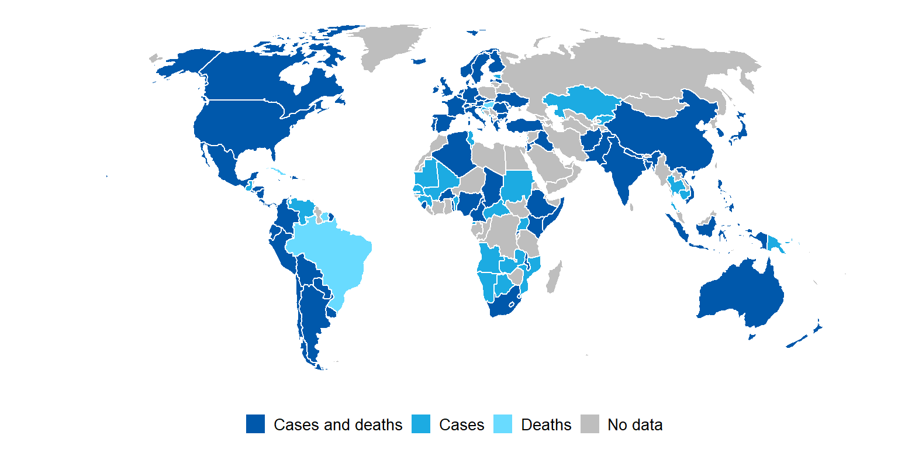
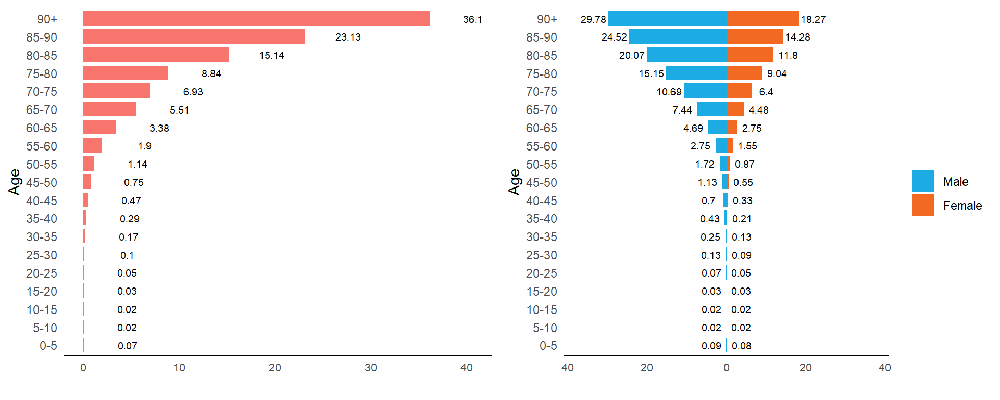
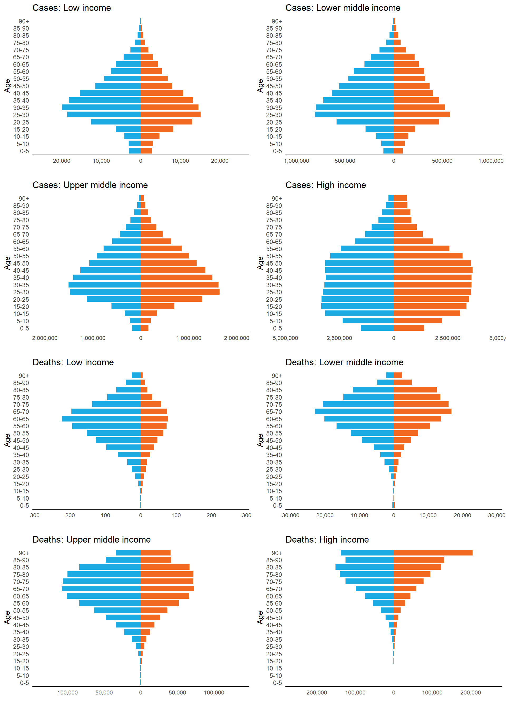

MPIDR/INED COVID-19 cases and deaths by age and sex
10 January 2021
Purpose
Population characteristics are key to understanding the prevalence, spread and fatality of COVID-19 across countries. The COVID Age Database (COVerAGE-DB) provides a valuable insight into age-and sex-specific patterns of COVID-19 cases and deaths.
Source of data
COVerAGE-DB is an open-access database including cumulative counts of confirmed COVID-19 cases, deaths, and tests by age and sex. Original data and sources are provided alongside data and measures in standardized and age-harmonized formats. The data were extracted from reports published by official governmental institutions in a variety of formats. The project page and the medRxiv paper contain the technical details.
The database is still in development. Today it includes 108 countries and 366 subnational areas.
Limitation
The limitation of the COVerAGE-DB is the heterogeneous qualities of the underlying data, which is also difficult to evaluate. Case and death counts are likely underestimated, with underestimation expected to vary by age. As the definitions and practices of counting COVID-19 cases and deaths vary in each country, the data should be interpreted with caution when making comparisons across countries or within the same country over time.
Cases and deaths by age
Figure 1. The 97 countries with national data on counts of COVID-19 cases and the 79 countries with national data on counts of COVID-19 deaths.

Table 1. The total cases and deaths reported by Johns Hopkins University (JHU) and extracted from the COVerAGE-DB database. The fourth column (COVerAGE-DB/JHU) shows the ratio of total case and death counts from COVerAGE-DB to those reported by JHU. The harmonized data of age groups 0-4, 5-9, 10-14, 15-19 are listed in the table. Their counts sum to age group 0-19 and the percentage values show this age group’s proportion in all age groups.
Figure 2. Population distribution of global COVID-19 cases, deaths and case fatality rate (CFR), with 5-year age interval. CFR is calculated by dividing death counts by case counts for each age group. In calculating CFR, only countries with both case and death data are counted.

Cases and deaths by age and sex
Figure 3. The 73 countries with national data on sex-specific counts of COVID-19 cases and the 64 countries with national data on sex-specific counts of COVID-19 deaths.

Table 2. Sex-specific counts of COVID-19 cases and deaths from COVerAGE-DB. The harmonized data for age groups 0-4, 5-9, 10-14, 15-19 and 0-19 as well as the proportion of age group 0-19 are shown in the table.
Figure 4. Population distribution of COVID-19 cases, deaths and case fatality rate (CFR), by sex and age (5-year age interval). In calculating CFR, only countries with both case and death data are counted.

Reference
Riffe, T., Acosta, E., and The COVerAGE-DB team (2020). COVerAGE-DB: A database of COVID-19 cases and deaths by age. medRxiv https://doi.org/10.1101/2020.09.18.20197228
Dong E, Du H, Gardner L. An interactive web-based dashboard to track COVID-19 in real time. Lancet Inf Dis. 20(5):533-534. https://doi.org/10.1016/S1473-3099(20)30120-1